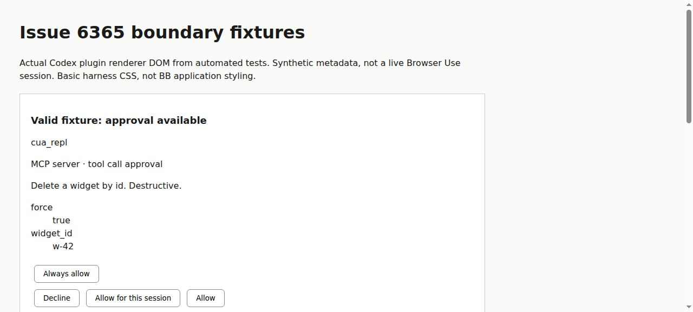
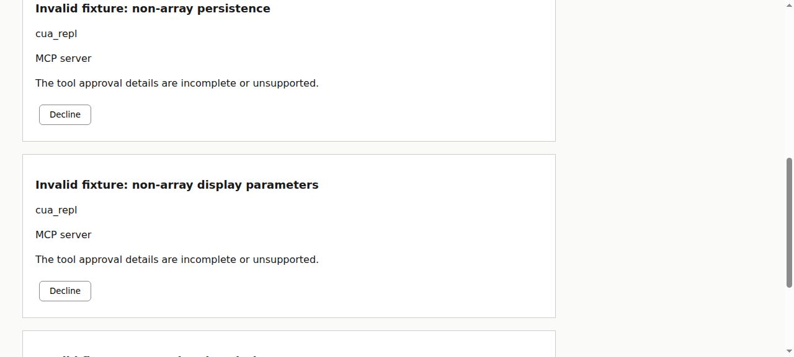

#6365 · Codex approval metadata rejection
Verdict: PARTIALLY REPRODUCED · Root-cause confidence: low for the reported live CDP failure. Confidence is high only in the tested normalization-to-rendering mechanism.
1. TL;DR
A request that BB cannot validate becomes an unsupported consent card with only Decline. That safe fallback was reproduced through the real Codex request decoder, plugin renderer, and native response encoder on trusted main, twice. Three deliberately malformed variants of a repository-owned approval fixture all generate the same error text; a valid fixture on the same browser server offers Allow. This does not establish which field the real browser request contained, or whether that field was a legitimate newer native format. No live Browser Use session, macOS behavior, or specific CDP operation was reproduced, and no compatibility fix is justified by these synthetic inputs.
2. Claims vs findings
| Claim | Finding | Evidence |
|---|---|---|
| Unsupported tool approval can render with only Decline. | Verified at the decoder/renderer boundary. | Three synthetic invalid metadata cases render exactly one button, Decline; acceptance also fails in the response encoder. |
| The exact error corresponds to tool-approval validation failure. | Verified in trusted main. | The Zod-error catch branch selects that reason after recognizing a generic tool approval. |
| Browser server identity alone prevents approval. | Not supported. | A valid repository-owned tool-approval fixture using the browser server name renders Allow and encodes acceptance. |
| The reported CDP request is a valid native approval that BB incorrectly rejects. | Unverified. | The report contains only normalized data, not the original native metadata or validation issues. No actual provider/browser request was captured here. |
| The original interaction remains pending and earlier automated review approved. | Unverified here. | The user's runtime and session were not accessed. The tests do not exercise storage, guardian review, or turn lifecycle. |
| The observed release and macOS version exhibit this failure. | Unverified here. | Tests run on Linux at the recorded main commit, not the released macOS application. |
3. Environment
- Trusted repository: public get-bb/bb; base SHA recorded above and checked against the canonical repository before execution.
- Linux x86_64; Node v22.19.0; pnpm 9.15.0; Vitest 4.1.1; provider plugin package version 0.1.0.
- Two newly created detached worktrees:
/tmp/slopcop-6365-NKnCIw/baseand/tmp/slopcop-6365-NKnCIw/verify. Production source remains unchanged in both; only the attached investigation test was added. - Frozen installs succeeded in both worktrees. The initial full Turbo build failed in the unrelated GitHub plugin because SDK runtime outputs had not yet been generated. Building SDK types and retrying did not repair that ordering problem. The targeted Turbo test task subsequently built the SDK runtime and passed.
- No BB development app, database, provider process, or session data directory was started. Browser captures use only the generated fixture DOM; no real credentials or consent request is involved.
4. Minimal reproduction
The attached test is an investigation of the safe-failure mechanism, not a failing regression proving that a valid native CDP request is rejected. It starts with a trusted repository fixture; it does not execute the issue's example code.
- Create a clean checkout of the trusted base commit and install its existing dependencies:
git clone https://github.com/get-bb/bb.git bb-6365 cd bb-6365 git checkout --detach b6743a36bd9eae1408c35cfc2c7ab1d2419dc79d pnpm install --frozen-lockfile --prefer-offline
- Save the attached investigation test to
plugins/provider-codex/src/issue-6365-repro.test.tsx. It reuses the repository's MCP tool-approval fixture and plugin testing host. - Run the focused test with dependency orchestration:
pnpm exec turbo run test --filter=bb-plugin-provider-codex -- src/issue-6365-repro.test.tsx --silent=false
- Compare the valid control with the synthetic malformed inputs:
Input variation Expected and observed normalized result Rendered actions Repository fixture + browser server + additive metadata tool_approval; acceptance encodes correctly Allow plus the offered remembered-scope actions and Decline persist is a string rather than an array unsupported; common tool-approval validation message Decline only tool_params_display is an object rather than an array unsupported; same message Decline only tool_description is numeric rather than text unsupported; same message Decline only
Verbatim diagnostic lines from both successful runs:
control: tool_approval; Allow available
non-array persistence: unsupported; only Decline; acceptance rejected
non-array display parameters: unsupported; only Decline; acceptance rejected
non-string description: unsupported; only Decline; acceptance rejected
Test Files 1 passed (1)
Tests 4 passed (4)
The test also writes plugins/provider-codex/issue-6365-harness.html containing the actual rendered plugin DOM. Open the saved fixture harness. This is static fixture output with basic CSS, not a live BB application screenshot or reproduction of macOS styling.


Complete investigation test
// @vitest-environment jsdom
import { writeFileSync } from "node:fs";
import { cleanup } from "@testing-library/react";
import { afterAll, afterEach, describe, expect, it, vi } from "vitest";
import { loadPluginApp, renderSlot } from "@get-bb/plugin-sdk/testing/app";
import { decodeCodexInteractiveRequest } from "./interactive-requests.js";
import {
buildCodexMcpElicitationResponse,
codexMcpElicitationSchema,
} from "./mcp-elicitation.js";
import fixture from "./fixtures/mcp-tool-approval-elicitation.json";
const app = await loadPluginApp(() => import("../app.js"));
const registration = app.pendingInteractions.find(
(interaction) => interaction.id === "mcp-elicitation",
);
if (!registration) throw new Error("Missing MCP elicitation renderer");
afterEach(cleanup);
const renderedCards: string[] = [];
afterAll(() => {
writeFileSync(
"issue-6365-harness.html",
`<!doctype html><html lang="en"><meta charset="utf-8"><title>Issue 6365 boundary fixtures</title><style>body{font:16px/1.5 system-ui;margin:36px;max-width:860px;background:#fafaf8;color:#1a1a1a}section{background:white;border:1px solid #ccc;padding:20px;margin:20px 0}button{padding:8px 16px;margin:6px;border:1px solid #888;border-radius:6px;background:white}svg{width:20px;height:20px}h2{font-size:18px}</style><h1>Issue 6365 boundary fixtures</h1><p>Actual Codex plugin renderer DOM from automated tests. Synthetic metadata, not a live Browser Use session. Basic harness CSS, not BB application styling.</p>${renderedCards.join("")}</html>`,
);
});
function decodeMetadata(metadata: Record<string, unknown>) {
const decoded = decodeCodexInteractiveRequest({
...fixture,
params: {
...fixture.params,
serverName: "cua_repl",
message: "Browser capability consent",
_meta: metadata,
},
});
if (!decoded || !("data" in decoded.payload)) {
throw new Error("Expected an extension interaction");
}
return codexMcpElicitationSchema.parse(decoded.payload.data);
}
describe("issue 6365 boundary investigation", () => {
it("accepts the trusted tool-approval fixture on the browser server", () => {
const payload = decodeMetadata({
...fixture.params._meta,
additive_field: "new metadata is permitted",
});
expect(payload.kind).toBe("tool_approval");
expect(buildCodexMcpElicitationResponse(payload, { action: "accept" }))
.toEqual({ action: "accept", content: {}, _meta: null });
const slot = renderSlot(registration, {
interaction: {
id: "pint_control",
threadId: "thr_control",
title: payload.message,
payload,
createdAt: 0,
expiresAt: null,
},
submit: vi.fn(async () => {}),
cancel: vi.fn(async () => {}),
});
expect(slot.getByRole("button", { name: "Allow" })).toBeTruthy();
renderedCards.push(`<section><h2>Valid fixture: approval available</h2>${slot.container.innerHTML}</section>`);
console.log("control: tool_approval; Allow available");
});
it.each([
["non-array persistence", { persist: "session" }],
["non-array display parameters", { tool_params_display: {} }],
["non-string description", { tool_description: 17 }],
])("recreates the safe fallback for %s", (name, changes) => {
const payload = decodeMetadata({ ...fixture.params._meta, ...changes });
expect(payload).toEqual({
kind: "unsupported",
serverName: "cua_repl",
message: "Browser capability consent",
nativeMode: "form",
reason: "The tool approval details are incomplete or unsupported.",
});
if (payload.kind !== "unsupported") {
throw new Error("Expected unsupported metadata");
}
const slot = renderSlot(registration, {
interaction: {
id: "pint_rejected",
threadId: "thr_rejected",
title: payload.message,
payload,
createdAt: 0,
expiresAt: null,
},
submit: vi.fn(async () => {}),
cancel: vi.fn(async () => {}),
});
expect(slot.getByText(payload.reason)).toBeTruthy();
expect(slot.getAllByRole("button").map((button) => button.textContent))
.toEqual(["Decline"]);
expect(() => buildCodexMcpElicitationResponse(payload, { action: "accept" }))
.toThrow();
expect(buildCodexMcpElicitationResponse(payload, { action: "decline" }))
.toEqual({ action: "decline", content: null, _meta: null });
renderedCards.push(`<section><h2>Invalid fixture: ${name}</h2>${slot.container.innerHTML}</section>`);
console.log(`${name}: unsupported; only Decline; acceptance rejected`);
});
});
5. Root cause
Verified mechanism: the request decoder passes native parameters into normalizeCodexMcpElicitation and returns its normalized payload. The marker, mode and empty-form checks select tool-approval normalization. Its metadata schema requires the recognized fields to have specific types.
persist: z.array(z.string()).nullish()
tool_description: optionalTextSchema
tool_params_display: z.array(z.object({
name: z.string().min(1),
display_name: z.string().nullish(),
value: z.unknown(),
})).nullish()
A Zod validation failure becomes a generic unsupported result rather than retaining field-level issues:
kind: "unsupported" nativeMode: params.mode reason: "The tool approval details are incomplete or unsupported."
The renderer displays the reason and renders approval actions only for supported kinds. The response encoder also rejects acceptance of unsupported requests; adding a UI Allow button alone would not fix it and would undermine a fail-closed permission boundary.
Unverified live root cause: the original native metadata is absent. The same normalized message is compatible with several distinct input failures, as the three tests demonstrate. We cannot infer that a particular display parameter, persistence scope, CDP permission field, or provider-version change caused the live report. The synthetic invalid variants are intentionally rejected; their rejection is not itself a product defect.
6. Proposed fix / next experiment
Not confident enough to change permission handling. Capture a fresh native request at the decoder boundary in an isolated development session and record only its schema shape and sanitized Zod issue paths; omit argument values, local URLs and credentials. First establish whether the request is valid under the native provider contract. If it is, add one captured-shape regression at this decoder boundary and make the narrow compatibility adjustment while preserving fail-closed behavior for genuinely malformed requests.
No pull request: the reported valid-native-request failure was not reproduced on trusted main. In addition, changing consent validation or accepted permission metadata is outside this automation's simple-fix allowance. No production fix, branch, commit, or push to get-bb/bb was made.
7. Verification
The same agent repeated the investigation in the second newly created detached worktree at the identical full base SHA, with a separate frozen install and newly executed tests. This is a second clean run, not an independent verification. Both tests were Turbo cache misses, and both produced 4 passed tests with the same four diagnostic lines. No ports or databases were needed for either reproduction run.
checkout: /tmp/slopcop-6365-NKnCIw/verify base: b6743a36bd9eae1408c35cfc2c7ab1d2419dc79d command: pnpm exec turbo run test --filter=bb-plugin-provider-codex -- src/issue-6365-repro.test.tsx --silent=false result: 1 test file passed; 4 tests passed rendered harness SHA-256, identical in both checkouts: 3b308f9c05e30f3c8142600d991078206952f0ee1976d54ff7b051f88a990554
Report correction after verification: none. The final verdict deliberately remains partial; the tests verify the fallback, not the live native CDP payload. An initial harness-only control queried a nonexistent button label; it was corrected to the actual Allow label before both recorded final runs. This was not an observed production regression.
The provider plugin's targeted typecheck also passes after correcting the investigation harness's own TypeScript narrowing and button-query options. No production TypeScript changes were needed.
8. Related issues and pull requests
No linked pull request appeared in issue timeline cross-references or in an open-PR search for the numeric issue. Trusted file history identifies merged #5664 as the introduction of MCP elicitation support. That establishes that the path exists on main; it does not establish this report's exact native-format incompatibility. A search for related CDP elicitation reports returned only this issue at investigation time. No PR branch or issue-supplied code was executed.
9. Appendix
- Repeatable investigation test
- First run log and second clean run log; absolute checkout paths are normalized for publication.
- Actual plugin DOM fixture harness
Trust boundary: issue content was treated as untrusted claims only. No supplied commands, linked branches, patches, or external issue URLs were executed or fetched. Runtime evidence from the reported session was not accessed. All executable product code came from the trusted main commit; only the attached local investigation harness was added.
Trusted setup and inspection: gh api repos/get-bb/bb gh issue view 6365 --repo get-bb/bb --json number,title,body,comments,labels gh api graphql (issue properties, labels, cross-references and type/field definitions) git fetch https://github.com/get-bb/bb.git main git fetch origin main git worktree add --detach <first-checkout> origin/main git worktree add --detach <second-checkout> b6743a36bd9eae1408c35cfc2c7ab1d2419dc79d pnpm install --frozen-lockfile --prefer-offline (both checkouts) pnpm exec turbo run build (initial SDK-artifact failure) pnpm exec turbo run build:types --filter=@get-bb/plugin-sdk pnpm exec turbo run build (same unrelated SDK runtime-artifact failure) pnpm exec turbo run test --filter=bb-plugin-provider-codex -- src/issue-6365-repro.test.tsx --silent=false (both checkouts) pnpm exec turbo run typecheck --filter=bb-plugin-provider-codex (passed) git log -4 --oneline -- plugins/provider-codex/src/mcp-elicitation.ts git log <base>..origin/main --oneline -- plugins/provider-codex gh pr list --repo get-bb/bb --state open --search 6365 --json number,state gh pr view 5664 --repo get-bb/bb --json number,state,mergedAt gh issue list --repo get-bb/bb --state all --search 'elicitation CDP' --limit 10 --json number,state sha256sum <first-harness> <second-harness>
Report generated from direct local execution. No screenshots, session records, or native metadata from the reporter are represented as independently verified.